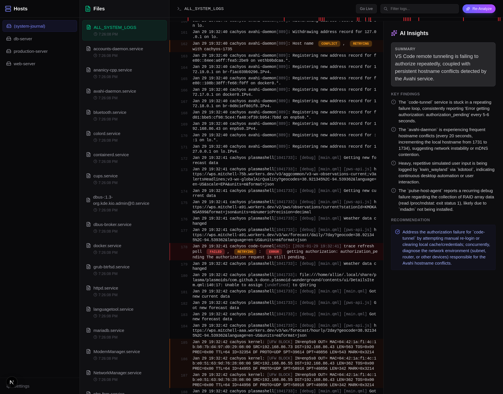

A local-first log viewer that connects to files, systemd journal, SSH hosts, and Docker — then uses AI to tell you what went wrong.
Alogi is an AI summary log viewer that turns noisy logs into plain-English explanations, root-cause hints, and actionable fixes. It works with local files, systemd journal, Docker logs, and remote SSH hosts.

Live tailing with AI-powered root cause analysis.
Terminal-grade speed with a UI that surfaces patterns you'd miss scrolling raw output.
Stream logs in real-time with auto-scroll. Pause to inspect, resume to catch up.
Ask Gemini, OpenAI, or Claude to summarize errors, find root causes, and suggest fixes.
Severity heatmap, JSON pretty-printing, and keyword coloring make patterns obvious at a glance.
Browse systemd services and read journalctl output without leaving the app.
Connect to remote servers over SSH with key or password auth. No agents to install.
List running containers and tail logs from any Docker host over SSH.
Connect your sources, find the signal, let AI explain it.
Point Alogi at a local log directory, add SSH hosts, or browse the system journal. Setup takes seconds.
Tail logs live, search across files, and use the severity heatmap to spot error clusters instantly.
Hit analyze and get an AI summary with root causes, affected services, and recommended next steps.
Prebuilt packages for major Linux distros. No runtime dependencies.
Native .deb package for apt-based systems.
# Download to /tmp to avoid apt sandbox warnings on locked-down $HOME
curl -L -o /tmp/Alogi-amd64.deb https://github.com/allisonhere/alogi/releases/latest/download/Alogi-amd64.deb
sudo apt install /tmp/Alogi-amd64.debPacman package, ready to install.
curl -LO https://github.com/allisonhere/alogi/releases/latest/download/alogi-arch.pkg.tar.zst
sudo pacman -U alogi-arch.pkg.tar.zstServe the same UI over HTTP without the desktop window.
Runs on your machine only. Opens in the browser.
alogi --web --openDefault URL: http://127.0.0.1:3000
Expose the UI to your local network on port 8111.
alogi --web --host 0.0.0.0 --port 8111 --openOpen from another device: http://<your-host-ip>:8111
Open an issue with your distro, architecture, and relevant logs.
Alogi is a local-first AI summary log viewer for Linux and DevOps troubleshooting.
Yes. Alogi can analyze selected log context and generate AI summaries, likely causes, and recommended next steps.
Alogi supports local log files, systemd journal, Docker logs, and remote logs over SSH.
No. Alogi is local-first and is designed to help inspect and summarize logs without requiring hosted log storage.